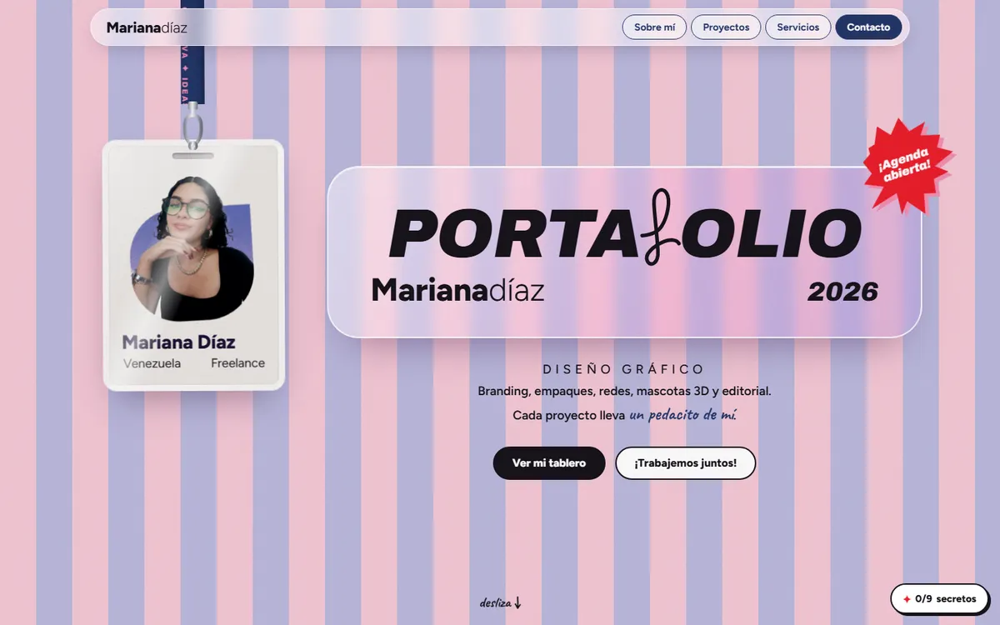
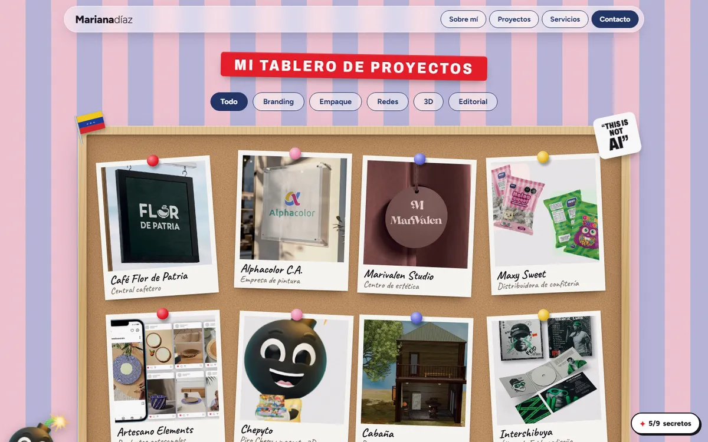

01
Ver esta propuesta →
Un pedacito de mí
Su identidad actual, hecha web.
Lleva a la web el universo de su portafolio: rayas rosa y lavanda, papel con grano, collage y objetos retro. La credencial se balancea (y se puede arrastrar), la máquina de escribir teclea su "sobre mí" y luego te da una hoja en blanco para escribirle, los proyectos están chinchados en un corcho que se puede reacomodar y el contacto es un teléfono de disco que se marca de verdad.
Funciona mejor para
Emprendimientos, marcas cercanas, belleza y alimentos: transmite personalidad desde el primer segundo y es la más fiel a su estilo.
Lo útil
- Escribirle una nota en la máquina de escribir (pulsando sus teclas con el ratón o con tu teclado, con sonido de tecla, timbre y retorno de carro) y enviársela a través del formulario.
- El contacto es una postal "por avión" (formulario). Cada servicio y cada proyecto tiene un "Lo quiero" que la deja rellenada.
- Ficha de proyecto con galería y paleta de colores copiable.
Ver los 9 secretos (spoilers)
- Doble clic en la credencial: se da la vuelta y aparece un pase VIP.
- Sticker "THIS IS NOT AI": sello de "hecho por una humana".
- Sticker "I am just a girl with ideas": salen bombillas.
- La banderita de Venezuela suelta 8 estrellas en arco.
- Teclear sobre la sección "Sobre mí" o pulsar las teclas de la máquina: entra una hoja nueva y puedes escribir.
- Marcar 1940 en el teléfono: modo café Flor de Patria, con vapor.
- Marcar 2001: modo Y2K con brillitos que siguen al cursor.
- Chepyto se asoma por la esquina: al tocarlo hay cuenta atrás y BIG BANG (o marca 911).
- Código Konami (↑↑↓↓←→←→BA) o tocar su nombre 5 veces: modo CREATIVA.